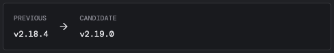

desktop · version-pair #0
Actual CSS display size

8× raster enlargement (inspection aid)
{
"parts": {
"previous": {
"rect": {
"x": 496,
"y": 416.125,
"width": 50.40625,
"height": 16
},
"mode": "text",
"font": "12px \"DM Mono\"",
"transform": "none",
"note": "DOM text-fragment rectangle, not glyph ink."
},
"connector": {
"rect": {
"x": 561.40625,
"y": 405.125,
"width": 16,
"height": 16
},
"mode": "box",
"font": "14px \"DM Sans\", sans-serif",
"transform": "none",
"note": "CSS border box, not optical mass."
},
"candidate": {
"rect": {
"x": 592.40625,
"y": 416.125,
"width": 50.40625,
"height": 16
},
"mode": "text",
"font": "12px \"DM Mono\"",
"transform": "none",
"note": "DOM text-fragment rectangle, not glyph ink."
}
},
"checks": [
{
"kind": "between",
"a": "previous",
"b": "connector",
"c": "candidate",
"axis": "x",
"minGap": 12,
"tolerance": 2,
"rationale": "The arrow connects the actual previous/candidate values; its two local gaps should read as one compact pair.",
"pass": true,
"observed": {
"beforeGap": 15,
"afterGap": 15,
"imbalance": 0
},
"expected": {
"minimumGap": 12,
"maximumImbalance": 2,
"axis": "x"
},
"note": "Use only when the connector belongs between this actual content pair; equal grid tracks may serve a different task."
}
]
}